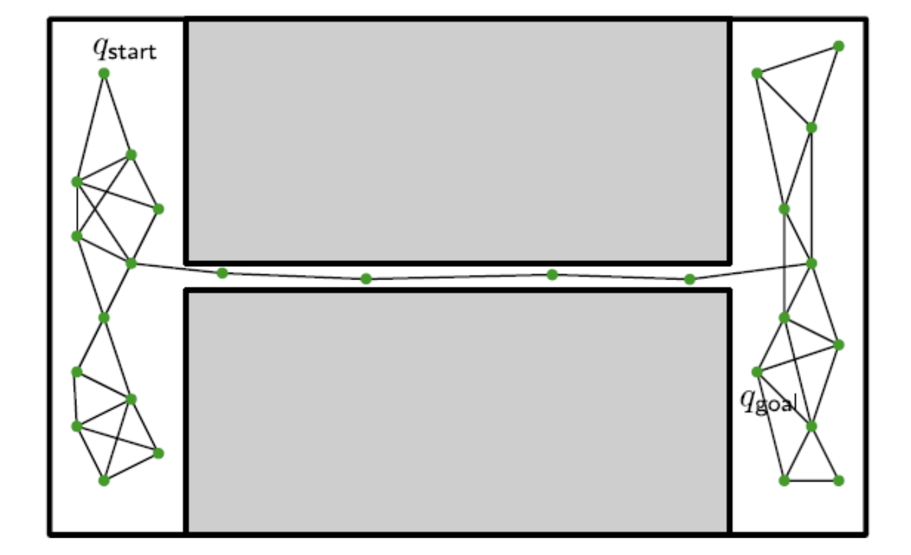
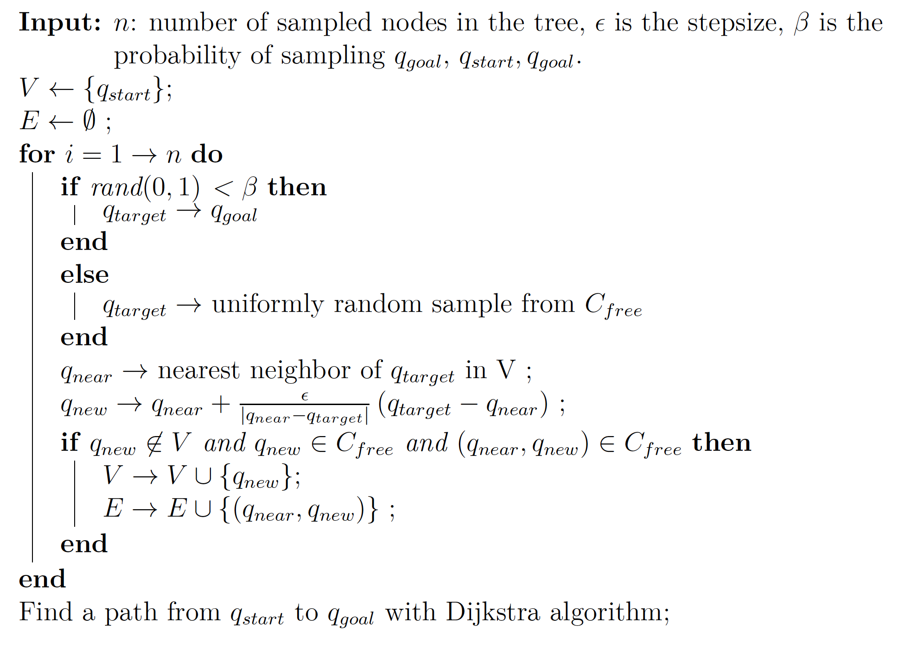

Your browser doesn't support the features required by impress.js, so you are presented with a simplified version of this presentation.
For the best experience please use the latest Chrome, Safari or Firefox browser.
L7-1: Sampled-based Motion Planning
Hao Su
Spring, 2021
Agenda
click to jump to the section.
Problem Formulation
Configuration Space
- Configuration space (\(\cal{C}\)-space) is a subset of \(\bb{R}^n\) containing all possible states of the system(state space in RL).
- \(\cal{C}_{free}\subseteq \cal{C}\) contains all valid states.
- \(\cal{C}_{obs}\subseteq \cal{C}\) represents obstacles.
- Examples:
- All valid poses of a robot.
- All valid joint values of a robot.
- ...
Motion Planning
-
Problem:
- Given a configuration space \(\cal{C}_{free}\)
-
Given start state \(q_{start}\)and goal state \(q_{goal}\) in \(\cal{C}_{free}\)
-
Calculate a sequence of actions that leads from start to goal
-
Challenge:
-
Need to avoid obstacles
-
Long planning horizon
-
High-dimensional planning space
Motion Planning

LaValle, Steven M. Planning algorithms. Cambridge university press, 2006.
Examples

Examples
- Ratliff N, Zucker M, Bagnell J A, et al. CHOMP: Gradient optimization techniques for efficient motion planning, ICRA 2009
- Schulman, John, et al. Finding Locally Optimal, Collision-Free Trajectories with Sequential Convex Optimization, RSS 2013
Sample-based Algorithm
- The key idea is to explore a smaller subset of possibilities randomly without exhaustively exploring all possibilities.
-
Pros:
-
Probabilistically complete
-
Solve the problem after knowing partial of \(\cal{C}_{free}\)
-
Apply easily to high-dimensional \(\cal{C}\)-space
-
Cons:
-
Requires to find path between two close points
-
Does not work well when the connection of \(\cal{C}_{free}\) is bad
-
Never optimal
Probabilistic Roadmap Method (PRM)
Probabilistic Roadmap(PRM)
- The algorithm contains two stages:
- Map construction phase
- Randomly sample states in \(\cal{C}_{free}\)
- Connect every sampled state to its neighbors
- Connect the start and goal state to the graph
- Query phase
- Run path finding algorithms like Dijkstra
Kavraki, Lydia E., et al. "Probabilistic roadmaps for path planning in high-dimensional configuration spaces." IEEE transactions on Robotics and Automation 12.4 (1996): 566-580.
Rejection Sampling
-
Aim to sample uniformly in \(\cal{C}_{free}\).
-
Method
- Sample uniformly over \(\cal{C}\).
- Reject the sample not in the feasible area.
Pipeline
Challenges
-
Connect neighboring points:
- In general it requires solving dynamics
- Collision checking:
- It takes a lot of time to check if the edges are in the configuration space.
Example
PRM generates a graph \(G=(V,E)\) such that every edge is in the configuration space without colliding with obstacles.

Example
Find the path from start state \(q_{start}\) to goal state \(q_{goal}\)

Limitations: Narrow Passages
It is unlikely to sample the points in the narrow bridge

Gaussian Sampling
- Generate one sample \(q_1\) uniformly in the configuration space
- Generate another sample \(q_2\) from a Gaussian distribution \(\cal{N}(q_1, \sigma^2)\)
- If \(q_1\in\cal{C}_{free}\) and \(q_2\neq \cal{C}_{free}\) then add \(q_1\)
Read by Yourself
Bridge Sampling
- Generate one sample \(q_1\) uniformly in the configuration space
- Generate another sample \(q_2\) from a Gaussian distribution \(\cal{N}(q_1, \sigma^2)\)
- \(q_3=\frac{q_1+q_2}{2}\)
- If \(q_1\), \(q_2\) are not in \(\cal{C}_{free}\) then add \(q_3\)
Read by Yourself
Rapidly-exploring Random Trees (RRT)
Rapidly-exploring Random Tree(RRT)
- RRT grows a tree rooted at the start state by using random samples from configuration space.
- As each sample is drawn, a connection is attempted between it and the nearest state in the tree. If the connection is in the configuration space, this results in a new state in the tree.
Extend Operation
Pipeline

Examples
Challenges
- Find nearest neighbor in the tree
- We need to support online quick query
- Examples: KD Trees
- Need to choose a good \(\epsilon\) to expand the tree efficiently
- Large \(\epsilon\): hard to generate new samples
- Small \(\epsilon\): too many samples in the tree
RRT-Connect
- Grow two trees starting from \(q_{start}\) and \(q_{start}\) respectively instead of just one.
- Grow the trees towards each other rather than random configurations
- Use stronger greediness by growing the tree with multiple epsilon steps instead of a single one.
Kuffner, James J., and Steven M. LaValle. "RRT-connect: An efficient approach to single-query path planning." Proceedings 2000 ICRA. Millennium Conference. IEEE International Conference on Robotics and Automation. Symposia Proceedings (Cat. No. 00CH37065). Vol. 2. IEEE, 2000.
Pseudo Code